Chain proxies into hubs #
On this page
One Maple proxy can use another as a provider. The one it uses is its hub. A hub can serve several proxies, and it can use a hub of its own, so a laptop can go to a team hub, and the team hub can go to a company hub.
Nothing about this is on by default. A proxy only takes part once you connect it to a hub (by signing in with your company account, or with a chain token from the hub's admin) or make a chain token (to be a hub). A proxy on its own machine works exactly as before.
What a chain gives you:
- Fallback either way. Use your own account first and the hub when it runs out, or the hub first and your own model when the hub says no.
- One set of people. People and teams defined on the top hub reach every proxy below it, with their tokens, budgets and model rules.
- One place to see usage. Each proxy sends its usage records up, so the top hub can answer for everyone below it.
- Who asked travels up. Every proxy a request passes through records the person who asked, the proxy they asked, and the path in between.
In plain words #
A hub is just another Maple proxy that other proxies use, usually one on a team machine. There are two ways to connect a proxy to a hub, and which one you use depends on who the proxy serves:
- Your own proxy, on your laptop: sign in with your company account, or paste your personal token. Sign in yourself, in a browser, in about a minute, when the hub has single sign-on with developer sign-in on; without it, paste the personal token the hub's admin made for you. Either way the hub counts everything your proxy sends as you. See Join your laptop to a team hub and Join with a personal token, just below.
- A team proxy that serves many people: a chain token from the hub's admin. It takes two people and two minutes. The proxy then brings the hub's people and teams down, sends its usage up, and tells the hub who asked for each request. See Connect a team proxy with a chain token.
Not sure? Which do I need? compares them, and Which setup do I need? compares every setup, from one laptop to several replicas.
Either way, Maple Harness keeps talking to the proxy on your own machine, as it always has: it is your proxy that connects to the hub, and every tool that uses your proxy (Maple Harness, Claude Code, OpenCode) gets the hub's models through it.
Join your laptop to a team hub #
You need the hub's sign-in address (the address you open to sign in to the hub, such as
https://maple-admin.example.com; ask the hub's admin) and your company account. Then, on your own proxy:
- Open your setup page, Hubs & chaining, Connect this proxy to a parent hub (until your proxy uses a hub, the tab is under Set up more, Connect to a hub, or serve other proxies). Under Sign in with your company account, type the hub's sign-in address, and Sign in with your company account.
- The page shows a link and a short code. Open the link in a browser, on this computer or on your phone, and sign in with your company account. You land on the hub's My access page.
- Under Connect your proxy, type the code and Check the code. The hub tells you which proxy asked (by its name) and asks Is this your own proxy? Press Yes, connect it if it is the one you just used, or No, refuse it.
- Back on your setup page, it says Signed in. The hub's models now work on your proxy as
hub/<model>.
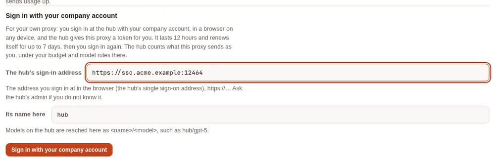
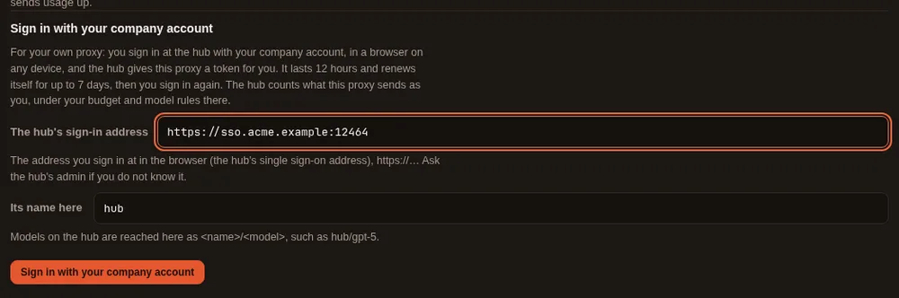
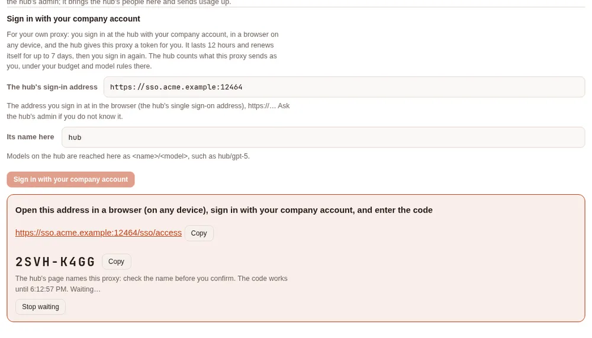
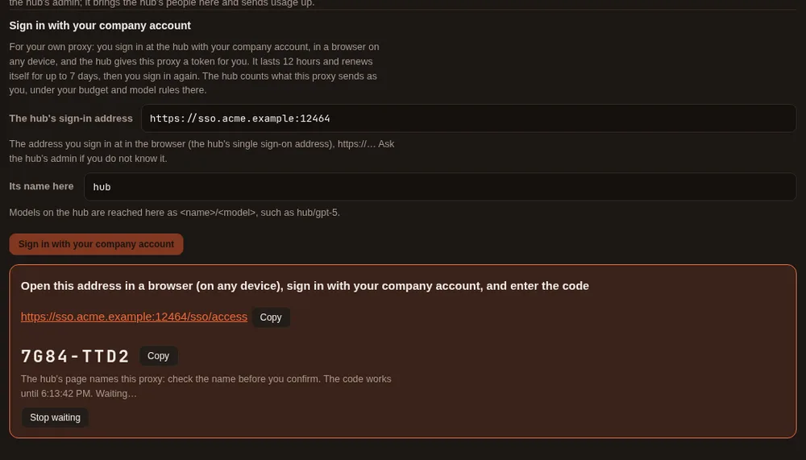
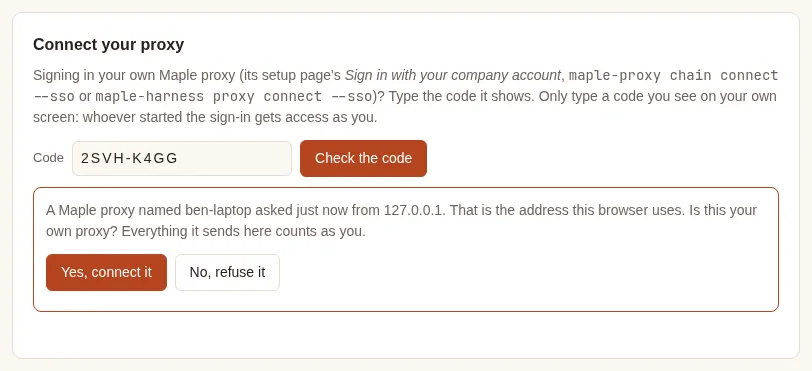
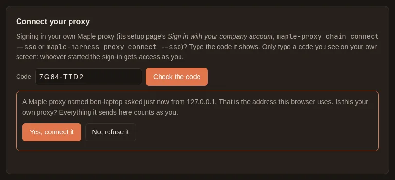
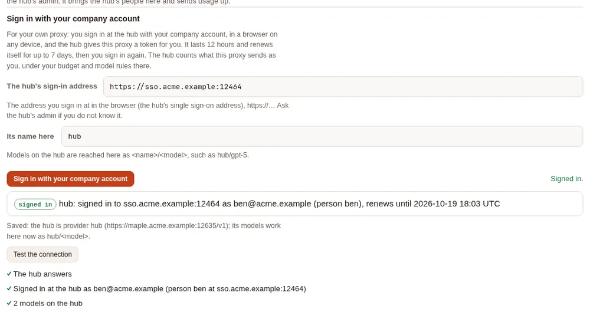
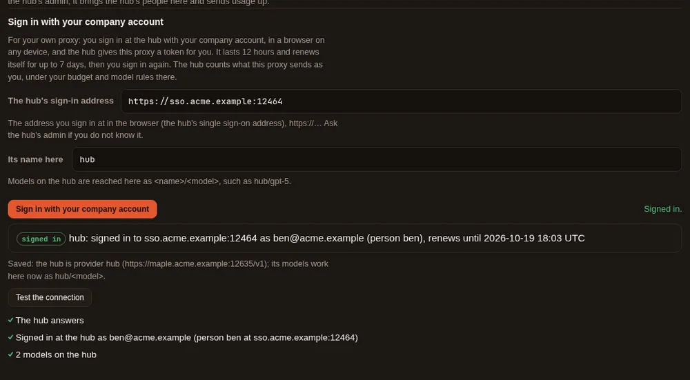
The same sign-in works from a terminal (maple-proxy chain connect --sso <address>), and from Maple Harness with one
command (maple-harness proxy connect --sso <address>): see Sign in: on the page or in a terminal.
Either way it is one sign-in: started in one place, it shows in the others, and you can end it from any of them. On
a machine with no browser (a server, or over SSH), use the terminal and open the link on any device you have.
What it means. The hub treats your proxy as you: what it sends counts against your budget there, and you get the models and accounts the hub allows you. Your proxy keeps its own providers too, so you can mix them, for example your own account first and the hub when it runs out (see The two common setups).
How long it lasts. About a week. Your proxy keeps itself signed in quietly, and after seven days it asks you to Sign in again (the same two minutes). If something goes wrong before that, for example the access was revoked on the hub, the page says so, with Sign in again and Disconnect:
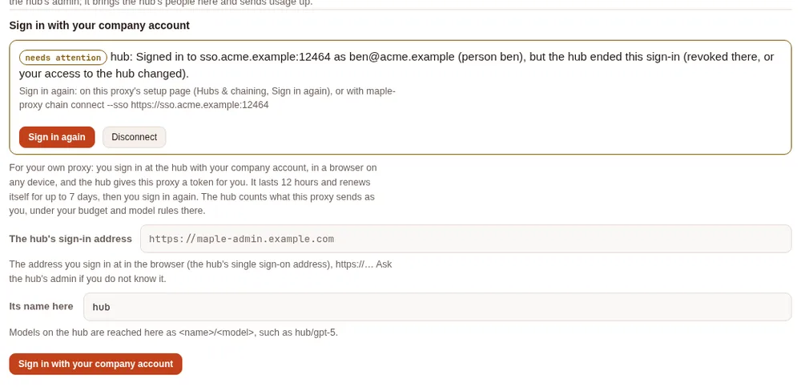
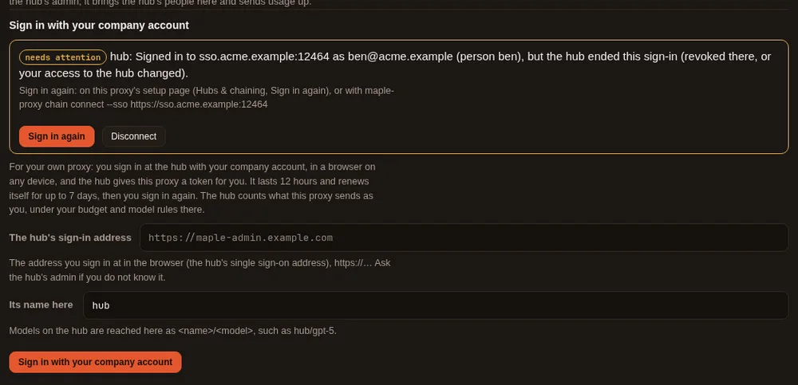
On a phone the section stacks the same way:
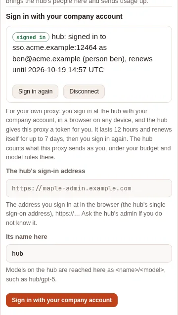
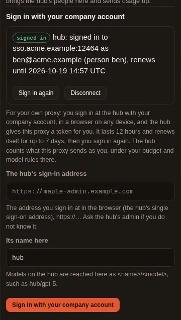
Join with a personal token #
Without single sign-on, the hub's admin makes you a token on the hub (People & teams, your Access and tokens, Make a token) and sends it to you with the hub's address; How they connect lists this first. On your own proxy:
- Open your setup page, Hubs & chaining, Connect this proxy to a parent hub, under Or paste a token from the hub's admin. Type the hub's address and paste your token.
- Press Test the connection. It says Connected as
<you>at<hub>: your requests count as you, and the page says Ready: this proxy joins the hub as you. - Tick the hub's models you want listed, and Save. Nothing asks you to confirm: the test passed.
Use the hub's people and teams here, and send usage up is unticked and greyed out for a personal token: making the
hub this proxy's parent (its people, teams and budgets here, usage sent up) needs a chain token from the hub's admin,
and the page says so. The hub's models work at once as hub/<model>, and Maple Harness keeps using your own proxy as
always.
![Connect this proxy to a parent hub on dana-laptop after a personal token was pasted: the hub's address http://team.example:12835/v1 with the private-network box ticked, the token hidden, and Test the connection with Ready: this proxy joins the hub as you; The hub answers, The token is accepted, Connected as dana at platform-hub: your requests count as you, The hub is platform-hub, 2 models on the hub, and a note to ask the hub's admin for a chain token for its people, teams and budgets. Under What to use it for, the parent hub box is unticked and greyed out, with the explanation that this is a personal token.](../img/docs/hubs-wizard-personal-light.webp)
![Connect this proxy to a parent hub on dana-laptop after a personal token was pasted: the hub's address http://team.example:12835/v1 with the private-network box ticked, the token hidden, and Test the connection with Ready: this proxy joins the hub as you; The hub answers, The token is accepted, Connected as dana at platform-hub: your requests count as you, The hub is platform-hub, 2 models on the hub, and a note to ask the hub's admin for a chain token for its people, teams and budgets. Under What to use it for, the parent hub box is unticked and greyed out, with the explanation that this is a personal token.](../img/docs/hubs-wizard-personal-dark.webp)
If the hub cannot say whose a token is (a hub before 2.2.0, or a token tied to nobody there), the test still passes, with a neutral note saying so. A token the hub refuses fails the test, with what to ask for.
Connect a team proxy with a chain token #
A proxy that serves a team connects with a chain token. It takes two people and two minutes:
- The hub's admin makes a chain token for your proxy, on the hub's setup page: Hubs & chaining, Let a proxy connect to this hub, type a name for your proxy, Make a chain token. The token is shown once.
- You connect your proxy, on your setup page: Hubs & chaining, Connect this proxy to a parent hub, under Or paste a token from the hub's admin. Paste the hub's address and the token, press Test the connection, tick the hub's models you want listed, give your proxy a name, and Save.
From then on your proxy can use the hub's models (as hub/<model>), uses the hub's people and teams, and sends its
usage up, so the hub's admin sees everyone in one place. The hub map on the same tab shows who is connected and
whether each proxy below is still asking, with its last seven days of usage.
The tab is in the menu once your proxy uses a hub or serves one. Before that, open it from Set up more, Connect to a hub, or serve other proxies.
On the hub: let a proxy connect #
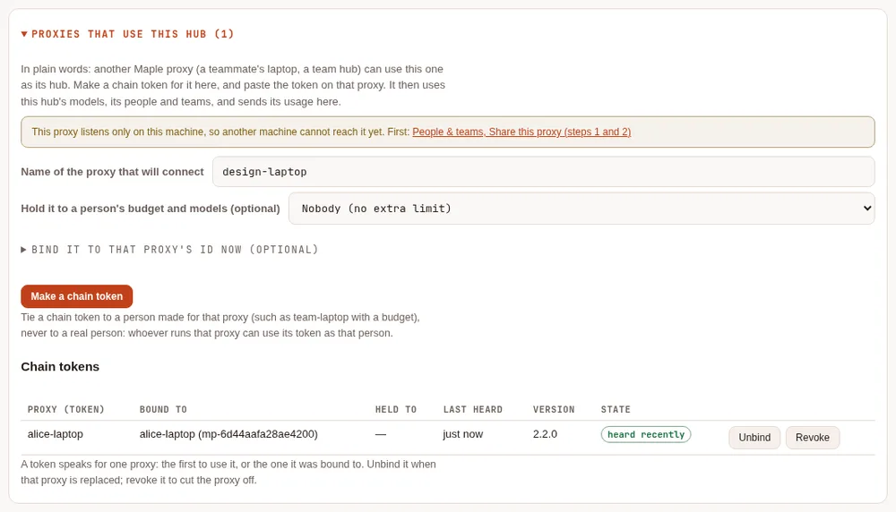
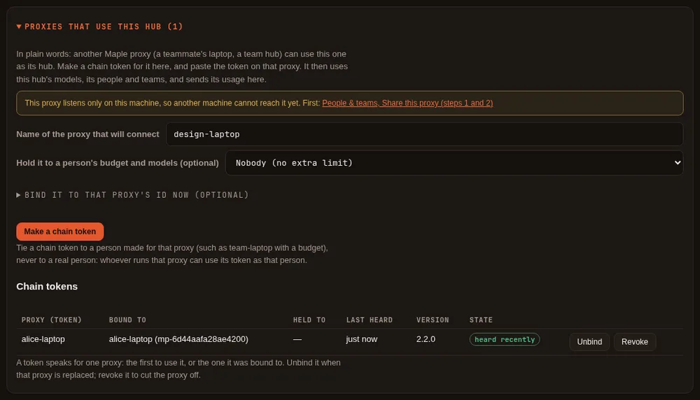
After Make a chain token the page shows the token once, with a ready-made snippet for the other proxy's
config.yaml, and Done hides it for good. Copy it then; if it is lost, revoke it and make another. Until the
other proxy uses it, the token waits:
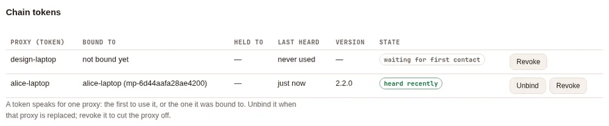
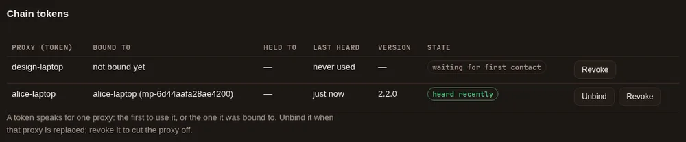
Hold it to a person's budget and models is optional: pick a person you made for that proxy (such as
team-laptop, with a budget) to cap everything it sends. Never pick a real person: whoever runs that proxy can use its
token as them.
On your proxy: connect to the hub #
![The Connect this proxy to a parent hub wizard on design-laptop: the Sign in with your company account section left empty, then under Or paste a token from the hub's admin the hub's address http://team.example:12835/v1 with the private-network box ticked, its name here hub, the chain token hidden, and the test result: Everything needed is there; the hub answers, the token is accepted, it is a chain token, the hub is platform-hub, the token is not bound yet, 2 models on the hub; claude-sonnet-5 and gpt-5-mini ticked, both uses ticked, and the name design-laptop.](../img/docs/hubs-wizard-connect-light.webp)
![The Connect this proxy to a parent hub wizard on design-laptop: the Sign in with your company account section left empty, then under Or paste a token from the hub's admin the hub's address http://team.example:12835/v1 with the private-network box ticked, its name here hub, the chain token hidden, and the test result: Everything needed is there; the hub answers, the token is accepted, it is a chain token, the hub is platform-hub, the token is not bound yet, 2 models on the hub; claude-sonnet-5 and gpt-5-mini ticked, both uses ticked, and the name design-laptop.](../img/docs/hubs-wizard-connect-dark.webp)
Test the connection asks the hub, without saving or binding anything: whether it answers, whether it takes the token, whether the token is a chain token (one that may say who asked) or a person's own token (and whose), whether another proxy already uses it, and which models it has. If something is missing it says what to ask the hub's admin for. A personal token passes too: see Join with a personal token.
Save puts the token in your secret store (your config.yaml gets only a reference), adds the hub as a provider,
and names it your parent hub. The hub's models work at once; using its people and sending usage up start when your
proxy restarts, and the page says so until then.
The hub map #


Above: the hubs this proxy uses, and whether they answer (Check the hubs above asks them; nothing leaves your machine otherwise). In the middle: this proxy, with its own and inherited people and teams. Below: every proxy that has a chain token here, with when it last asked this hub, the release it runs, and its last seven days of client requests, AI units and estimated cost. Select one to see its usage on the Usage tab. Table shows the same as a table, also for screen readers. On a phone the map stacks:
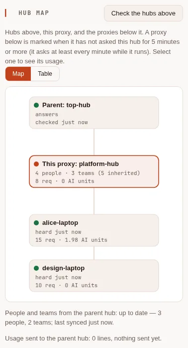
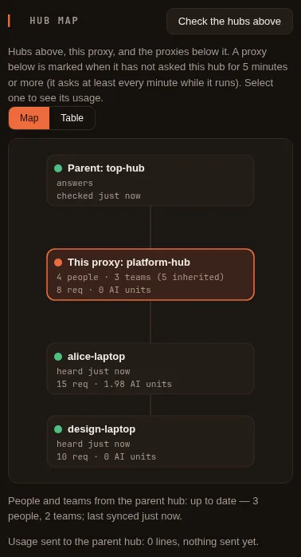
On the top hub, the proxies further below are listed by name, as reported through the proxy between:
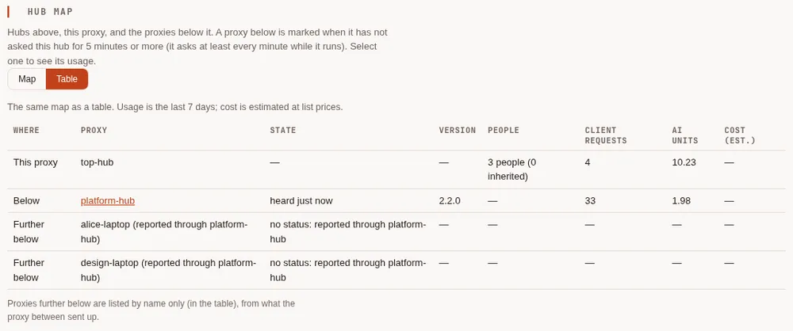
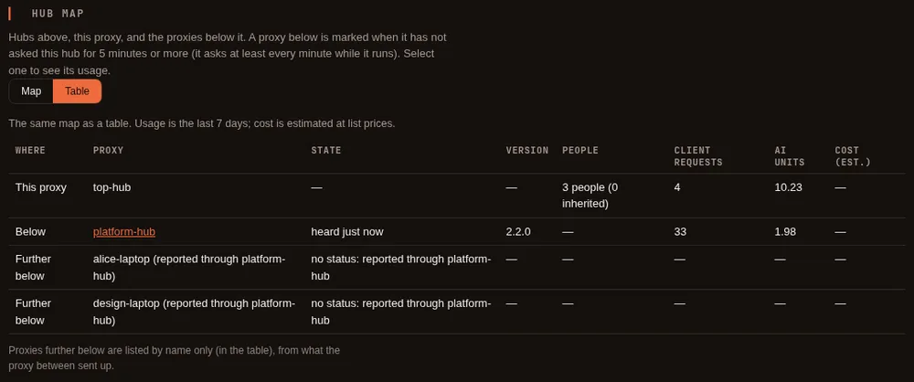
On your own proxy, the map shows your hub above:
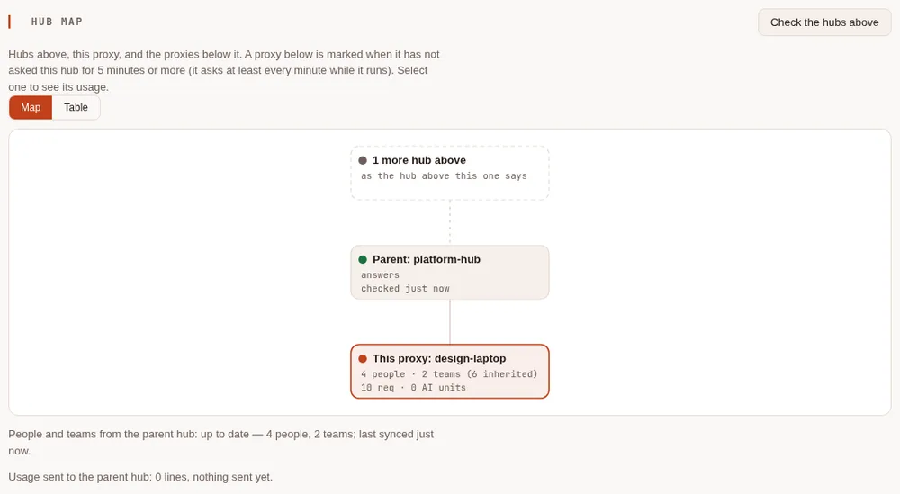
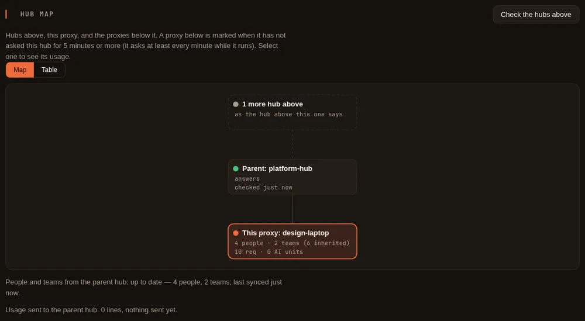
Day to day on the hub #
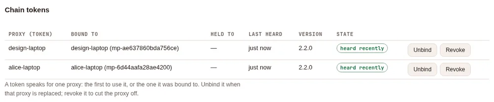
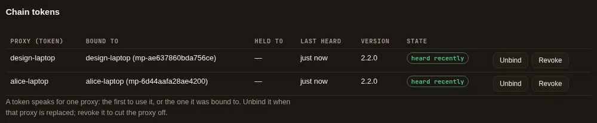
- Unbind when the proxy below was replaced: the next proxy to use the token is the one it speaks for.
- Revoke to cut a proxy off: it can no longer use the hub, within seconds.
- A proxy below is marked not heard lately after five minutes without asking (it asks at least every minute while it runs): it is stopped, or cannot reach the hub.
The technical view #
Everything above can also be done in config.yaml and with maple-proxy commands, as below, and the page and the
commands can be mixed.
Personal token or chain token: which do I need? #
A proxy below a hub holds one of two kinds of credential for it.
- A personal token is one person's own token. Your proxy gets one when you sign it in with your company account; an admin can also make one for you (People & teams), or you can make one on My access. The hub counts everything the proxy sends as that person.
- A chain token is made by the hub's admin for one proxy that serves many people. It brings the hub's people and teams down to that proxy, sends its usage up, and tells the hub who asked for each request.
| Personal token (sign in with your company account) | Chain token (from the hub's admin) | |
|---|---|---|
| For | Your own proxy, used by you alone (your laptop) | A team proxy that several people use |
| Who sets it up | You: sign in, in a browser, when the hub has single sign-on with developer sign-in; or paste a token an admin or My access made (the page then leaves Use the hub's people and teams here, and send usage up unticked) | The hub's admin makes it; the proxy's admin pastes it |
| The hub counts requests as | You: your budget, your models and accounts at the hub | Each person who asked (and, if the admin chose, a person made for that proxy) |
| The hub's people and teams come down | No | Yes (chain.parent) |
| Usage is sent up to the hub | No: the hub records your requests itself, as yours | Yes |
| This proxy's parent hub | Never | Yes, by default |
| How long it lasts | Signed in: 12 hours, renewed quietly for up to 7 days, then sign in again. Pasted: until it expires or is revoked | Until the admin revokes it |
| Works on a proxy with replicas, settings from files, or read-only secrets | Signed in: no. Pasted: yes | Yes |
If in doubt: on your own laptop, sign in; on a machine other people use, ask the hub's admin for a chain token.
Sign in to a hub with your company account #
What the plain-words steps do, in detail. It needs a hub that runs Maple 2.2 or
later with single sign-on and developer sign-in on, and
its sign-in address, which must be https:// (only the address: no path, query or user).
Sign in: on the page or in a terminal #
There are three ways in, and they are one and the same sign-in: a sign-in started in one shows in the others, and any of them can end it.
| Step | On your proxy's setup page | In a terminal on your proxy's machine |
|---|---|---|
| Start | Hubs & chaining, Connect this proxy to a parent hub, Sign in with your company account: type The hub's sign-in address and Its name here (hub by default), then Sign in with your company account | maple-proxy chain connect --sso https://<the hub's sign-in address>, with --name <name> (hub by default) |
| The link and the code | A card with the link to the hub's My access page and the code, each with Copy, and Stop waiting | Printed, with the time the code works until |
| On the hub | Open the link on any device, sign in, type the code under Connect your proxy, check the proxy's name, Yes, connect it | The same |
| Done | Signed in., the status line, and Test the connection, which says Signed in at the hub as you | Signed in to <hub> as <you>, the provider it added, and the date it renews until |
| Stop waiting | Stop waiting: nothing is saved | Ctrl-C, or --wait 10m to give up after ten minutes: nothing is saved |
maple-proxy chain connect --sso also takes --models-url <address> (see Where your requests go) and --models a,b: hub models to list on your proxy (every hub model works
as <name>/<model> anyway; listed ones also show in the proxy's model list and the harness's picker). It talks to
the hub itself, so it works whether or not the proxy is running; a running proxy that uses the same config.yaml picks
the new hub up without a restart, and the command says so. A name already used by another kind of provider is
refused: choose another with --name. For example (the addresses, code and dates are examples):
$ maple-proxy chain connect --sso https://sso.acme.example:12464
To sign this proxy in to sso.acme.example:12464, open this address in a browser (on any device), sign in with your company account, and enter the code:
https://sso.acme.example:12464/sso/access
88HB-6KCR
The hub's page names this proxy, so check the name it shows. The code works until 14:32. Waiting…
Signed in to sso.acme.example:12464 as ben@acme.example (person ben). The token and its renewal are in this proxy's secret store (file); config.yaml names it by reference.
Added the hub as provider "hub" at https://maple.acme.example:11535/v1: its models are reached here as hub/<model>, and the hub counts them as you.
The running proxy renews the token by itself until Mon 19 Oct 14:22; after that, sign in again (this command, or the setup page's Hubs & chaining tab).From Maple Harness. maple-harness proxy connect --sso https://<the hub's sign-in address> (with --name if you
want another name than hub) is a shortcut for the same thing. It does not sign the harness in: it starts your local
proxy if it is not running, has that proxy sign in through its setup page, prints the link and the code, and ends
with "Your local proxy is now signed in to <hub> as <you>; the harness keeps using your local proxy." Nothing is
written to the harness's settings, and no token reaches the harness. Pick a hub model with /model (hub/<model>).
If the harness is set up the advanced way, to use a proxy elsewhere (harness.proxy), the shortcut refuses and says
to sign that proxy in on its own machine.
What your proxy keeps, and what the hub sees #
- On your proxy: a token for you with the
proxyscope only (it uses the hub's models; it is never a chain token), kept in your proxy's secret store.config.yamlgets amapleprovider for the hub (the name you chose,hubby default) at the model address the hub gives, with only a reference to the token. The hub's models are reached as<name>/<model>, and fallbacks work as with any provider. - On the hub: the token belongs to you. Everything your proxy sends counts as you: your budget, your allowed models and accounts, your usage. On My access the token shows as your proxy (renews itself), and on the hub's People & teams as their proxy (renews itself). You can revoke it on My access, and an admin can revoke it there.
- Who used your proxy is not sent. The hub sees you, whoever on your machine used your proxy. That is why this is for your own proxy: for a proxy other people use, use a chain token.
- The hub's onboarding rules apply. With developer sign-in on Ask an admin, your first sign-in on My access
waits for an admin; with Off, the hub refuses sign-in from a proxy. The proxy's token counts toward your token
limit on the hub (
developers.max_tokens); when you are at the limit, the sign-in is refused at once and says so.
Where your requests go #
The hub tells your proxy where its models are. When that address is on the hub's sign-in address's own domain over
https:// (https://maple.acme.example:11535 beside https://sso.acme.example, say), your proxy uses it. When it is
anywhere else (another domain, plain http://, an IP address, this machine), nothing is saved until you say so:
- On the page, after you confirm the code, a card says where the hub says its models are and why it asks, with Use it and No, end the sign-in.
- In a terminal,
maple-proxy chain connect --ssoends the sign-in at the hub, keeps nothing, and prints the address with the flag to use when you trust it: run it again with--models-url <that address>.maple-harness proxy connect --ssoasks in the terminal (or takes--models-urltoo).
Behind a company HTTP proxy, set HTTPS_PROXY as usual (and NO_PROXY for internal hubs): the sign-in, its
renewals and Test the connection go through it, encrypted end to end with the hub, as the hub's models do.
A hub at a plain http:// address that your HTTP_PROXY applies to sends its token and your prompts through that
proxy unencrypted: the proxy says so (in its log, on the hub's card and in What's configured); add the hub to
NO_PROXY, or use https.
Some addresses are never used, whatever you answer: link-local and cloud metadata addresses, this proxy's own addresses, and names that are not plain ASCII (a lookalike of another name). Ask the hub's admin when unsure: the address is the developers' OpenAI-compatible address in the hub's single sign-on settings.
Status and "Sign in again" #
Your running proxy renews its token quietly before it expires (a token lasts 12 hours), for up to 7 days after you
signed in in the browser. A laptop that was off for a night or a weekend renews when it is back, as long as the seven
days are not over. Then it stops, and you sign in again: Sign in again on the page, or maple-proxy chain connect --sso
once more. Until then, the sign-in shows in these places, all with the same words:
| Where | What it says |
|---|---|
| Hubs & chaining on the setup page | Each sign-in, with Sign in again and Disconnect |
| What's configured on the Overview | The Hubs and chaining line |
| The hub's provider on the Providers tab | Its health |
maple-proxy chain status | Under Signed in with a company account: |
maple-harness doctor | The Proxy line names the hub and the problem, with what to do |
When all is well, the line says signed in to <hub> as <you> (person <id>), renews until <date>. When it needs
attention, it says what happened and how to fix it, ending with Sign in again and where:
- Renewing ended (seven days after the browser sign-in), but the token still works until a date: sign in again before then.
- The sign-in ended: the seven days are over and the token has expired.
- The token expired and could not be renewed (your proxy could not reach the hub, for example). The proxy tries again every minute; if it keeps failing, sign in again.
- The hub ended the sign-in: the token was revoked on My access or by an admin, or you were removed. When the hub refuses the token, your proxy checks with the hub at once, so this shows straight away rather than at the next renewal.
$ maple-proxy chain status
...
Signed in with a company account:
hub: signed in to sso.acme.example:12464 as ben@acme.example (person ben), renews until 2026-10-19 14:22 UTCDisconnect #
On the page, Disconnect next to the sign-in. In a terminal:
maple-proxy chain disconnect # the hub named "hub"
maple-proxy chain disconnect --name acme-hub # another name
maple-proxy chain disconnect --keep-provider # end the sign-in, keep the provider entry in config.yamlDisconnecting ends the sign-in at the hub (its token is revoked there), forgets it on your proxy, and removes the
hub's provider (unless --keep-provider). If the hub cannot be reached, it says so: the sign-in is forgotten here,
its renewal ends by itself after the seven days, and you can revoke the token on the hub's My access page meanwhile.
Deleting the hub's provider (on the Providers tab, say) also ends its sign-in at the hub, and so does giving the hub
another key or another address on the Providers tab or in the raw editor. Pasting a chain token for a hub you signed
in to replaces the sign-in: once the token is saved, the sign-in is ended at the hub. chain disconnect and
Disconnect only remove hubs (maple providers): another provider is refused.
When the hub or this proxy cannot do it #
| What you see | Why | What to do |
|---|---|---|
<host> does not offer sign-in from a proxy (a Maple release before 2.2, or not a Maple hub): paste a token from your admin instead. | The hub runs an older release, or the address is not a Maple hub's sign-in address | Ask the hub's admin for a token |
<host> has sign-in from a proxy turned off (developer sign-in is off there): paste a token from your admin instead. | Developer sign-in is off on the hub | Ask the hub's admin to turn it on, or for a token |
| An address refused with "(https, or http only for a hub on this machine)" | The sign-in address is plain http:// on another machine | Use the https:// address (plain http:// works only for a hub on this machine) |
| "this proxy runs as several replicas (central storage) …" | Each replica would renew the same sign-in | Use a chain token |
| A refusal about settings from files the proxy cannot change, or secrets mounted read-only | The proxy cannot keep a sign-in (a ConfigMap, say) | Use a chain token |
Limits #
- Not a parent hub. A personal token uses the hub's models as you. It cannot bring the hub's people and teams
down or send usage up: that needs a chain token. A hub you signed in to is never this proxy's
chain.parent, and the page refuses to make it one (paste a chain token to replace the sign-in instead). - One proxy, one machine. A proxy with replicas (
storage.mode: central), with its settings from files it cannot change (a ConfigMap), or with read-only mounted secrets cannot keep a sign-in: use a chain token. - Hubs from 2.2 on. An older hub, or a hub with developer sign-in off, refuses with the messages above. Pasted chain tokens work as before with every hub.
- Tested with a stand-in identity provider, in Chromium through a TLS front, with a real local proxy signing in from its page and from the terminal. Not yet run against real Google, Microsoft Entra ID, Okta or GitHub accounts.
The two common setups #
Your own account first, the hub when it runs out #
The laptop uses its own Copilot account. When that account is out of quota or rate limited, requests go to the hub, and come back to the laptop's account once it answers again.
# config.yaml on the laptop
server:
proxy_name: laptop
providers:
- id: copilot
type: github-copilot
# ... as set up by maple-proxy auth login github-copilot
- id: hub
type: maple
base_url: https://hub.example:11535/v1
api_key: ${secret:hub-token}
provider_fallbacks:
copilot: [hub/gpt-5]The hub's models are reached as hub/<model>, whether or not they are listed under the provider. A hub in the middle
of a chain (one with chain.parent) passes a model it does not serve itself on to its parent, so it does not need a
list of the models above it either. While the laptop's account is marked as out of quota, requests go to the hub
first; the mark is lifted when the account's own wait is over.
The hub first, your own model when the hub says no #
The laptop sends everything to the hub. When the hub refuses (a budget there is spent, the hub is down, or the hub's own accounts are out of quota), a local model answers instead.
# config.yaml on the laptop
providers:
- id: hub
type: maple
base_url: https://hub.example:11535/v1
api_key: ${secret:hub-token}
- id: ollama
type: ollama
base_url: http://127.0.0.1:11434/v1
models: [{id: qwen3:8b}]
model_fallbacks:
hub/gpt-5: [ollama/qwen3:8b]Each refusal from the hub is named the same way as a refusal from any provider, so the usage log says why the
fallback ran: daily budget spent, quota exhausted, rate limited, overloaded or unreachable. When the hub
refuses this proxy's token (it was revoked, say), the fallback still runs if one is set, and the request is recorded
as not authorised with the route reason fallback:not-authorised, so it does not go unnoticed. The proxy's log
says so too.
A hub in the middle of a chain does the same toward the hub above it.
Set up a hub #
On the hub, make a token for each proxy that will use it:
maple-proxy chain token laptopThe token carries two scopes: proxy, to use the hub's models, and proxy-chain, which lets the proxy holding it
say who asked. The token is shown once. The hub's model surface must be reachable from the other proxy: on another
machine that means a listen address other than 127.0.0.1 and, outside your own network, HTTPS (see
Endpoints).
On the proxy that will use the hub, add the hub as a provider with the token in api_key, then move the token
out of config.yaml into the secret store with maple-proxy secrets migrate (it leaves a ${secret:...}
reference in its place):
providers:
- id: hub
type: maple
base_url: https://hub.example:11535/v1
api_key: mh_... # the token from maple-proxy chain token
chain:
parent: hub # inherit the hub's people and send usage up to itbase_url must be https://, except for an address on this machine or your local network (a private address, or
a .local name), or a provider marked local: true. A .local name is found by asking the local network, so
prefer https or an address where anyone on that network could answer for it. It may not hold a user name, password or query.
Check the chain from either end:
maple-proxy chain statusIt lists each hub, whether it answers, how many hubs are above it, the people inherited from the parent, and what the proxies below this one have sent up, by name.
To see the hub's chain tokens and the proxy each one is bound to:
maple-proxy chain token showIt shows each token's id, label and bound proxy ("not bound yet" until its first use), never a token or its hash.
maple-proxy chain token unbind <id> clears a token's binding, so the next proxy that uses it is bound instead: use it
when you replace a proxy below, or make a new token with --proxy <id> to bind it from the start. (show and unbind
cannot be used as token labels.) The setup page's chain tokens list does the same: Unbind, Revoke, and, under
Bind it to that proxy's id now, a token bound from the start.
What the wizard writes #
On the proxy below, Save writes what the hand-written setup above writes: a provider of type: maple with the
address (local: true when the private-network box is ticked), api_key: ${secret:provider/<name>/api_key} with the
token in the secret store, the models you ticked, chain.parent (unless you untick it), chain.report_usage: off if
you untick sending usage, and server.proxy_name. It changes only those keys, under the same lock as every other save,
so a change made meanwhile from a terminal is kept. Saving again without a token keeps the saved one, but only for the
same address: a new address needs the token again. A hub name already used by a provider of another type is refused.
Test the connection follows the same address rule as the provider (https, except this machine, a private address,
a .local name or a private network you tick), never follows a redirect, and refuses link-local and cloud metadata
addresses (such as 169.254.169.254) however they are written. It sends the token only to the address you typed, and
shows a summary of what the hub answered, never the hub's own text.
What the hub map shows #
| On the map | Where it comes from |
|---|---|
| A hub above: answers, latency, checked | Check the hubs above asks each maple provider's hub, at most once every ten seconds whoever asks; the answers are shown for ten minutes |
| How many hubs further up | What the parent's own answer says |
| This proxy | Its name and id, its own and inherited people and teams, its last seven days |
| A proxy below: heard, version | When it last fetched this hub's people or sent its usage, with an accepted chain token; the version it names. Marked not heard lately after five minutes |
| Waiting | A chain token no proxy has used yet |
| Usage below | The last seven days of what each proxy below sent up: client requests started there or below, AI units spent there or below, and the cost estimated at list prices |
| Further below | Names only, from what the proxy between sent up; no status |
The times a proxy below was heard are kept in the hub's configuration folder (in storage mode central, in the shared
database, so every replica's page agrees), and only for proxies that use a chain token here. Unbinding or revoking a
token forgets them; a proxy not heard from for 90 days is forgotten too.
Through single sign-on the map is shown without hub addresses, token names or errors (which can name an address), and without tokens no proxy uses yet; making, unbinding and revoking chain tokens and connecting to a hub stay on the setup page on the proxy's own machine.
The proxy-chain scope #
Only a token with the proxy-chain scope (and the proxy scope) is trusted to say who asked. A request with any
other token, or none, is recorded as that token's own: headers claiming another person are ignored and removed. A
token for everything (all scopes) does not include proxy-chain, and a proxy from before 2.0 does not know the scope,
so it never trusts a forwarded person at all.
A proxy-chain token belongs to one proxy: the first proxy to use it is the only one it speaks for from then on, and
a proxy is bound to one token (a second token cannot be bound to a proxy that already has one).
The same token sent by another proxy still uses the models, but what it says about who asked is ignored. Make one
token for each proxy below the hub; maple-proxy chain token laptop --proxy <its id> binds it to that proxy from the
start (its id is in its own maple-proxy chain status).
The same scope is needed to read a hub's people and to send it usage records. A hub with no proxy-chain token has
none of these endpoints.
Who a hub takes a forwarded request to be from #
- One of the hub's own people (defined on the hub, or inherited by it from further up) only when that person signed in below with their own token. The proxy where they signed in sends a proof made from that token with the request, and each hub on the way checks it; the token itself never leaves that proxy. A proxy below cannot name one of the hub's people without it: such a request counts as the proxy below's own (see the next point).
- A person the hub does not know (one the proxy below defined itself, or its caller without a token) by their name
marked with the proxy below that sent the request: its
server.proxy_name, such ascarol@platform-hub, or its id when it has no name or another proxy below already uses that name (the first to use a name keeps it). So they are never one of the hub's own people. - Whatever it is told, also the person the proxy below's chain token is tied to on the hub. Tie a chain token to a
person (
maple-proxy chain token laptop --person team-laptop, ormaple-proxy people tie-tokenlater) to hold everything that proxy forwards to that person's model list, accounts and budget, as well as the requester's own rules. Both budgets are charged. A chain token tied to nobody adds no rules: tie every chain token on a hub with people set up. Tie it to a person made for that proxy, never to a real person: whoever runs that proxy can use its token as that person.
People and teams cascade down #
With chain.parent set, a proxy fetches its parent's people, teams and their tokens at start, keeps a copy in its
configuration folder, and asks again at once whenever the parent says something changed (the parent holds each
request for up to 30 seconds until it has news). chain.directory_interval (a minute by default) is how long it
waits after a failed or quick answer. The parent sends a check value for each token, made for that proxy alone, never
a token or the hash the parent keeps, and never a provider key; inherited tokens can only use the models, whatever the
parent says.
- Inherited people sign in at any proxy below with their own token, and their budgets and model rules apply there.
- A proxy may add its own people and teams, also while its parent cannot be reached. For an inherited person or team it
may only tighten the rules: a lower budget, fewer models, fewer accounts. Anything looser is reported as a conflict
by
maple-proxy people list, and the parent's entry applies. A local person (or a local person's team) that clashes with one the parent hands down keeps no rules of its own: its own tokens are refused until the clash is resolved. - A parent's
localperson is not inherited:localon each proxy is whoever calls that proxy's machine without a token. - A person assigned an account that only a hub above holds is served on that account through the parent.
- A token revoked on the hub stops working below within seconds, one hop after another.
- If the parent cannot be reached, the kept copy is used for
chain.directory_grace(15 minutes by default). After that, inherited tokens are refused until the parent answers again; the proxy's own tokens keep working.
What each proxy records #
Every proxy a request passes through writes its own line in its usage log. On each line:
| Column | On a laptop's own request | On the hub, for a request from the laptop |
|---|---|---|
person, team | who asked | who asked, at the laptop |
proxy_id, proxy_name | the laptop | the hub |
origin_proxy | the laptop | the laptop |
hops | 0 | 1 (2 one hub further up) |
via | empty | laptop (then laptop>team-hub) |
forwarded | true when the hub served it | false when the hub's own account served it |
request_id | the same on every line of the request, on every proxy |
proxy_id is made when a proxy first starts and stays the same while its configuration folder is kept;
server.proxy_name gives it a readable name. The full list of columns is in Your usage data.
X-Maple-Router on the answer shows the path: via hub: copilot-work/gpt-5, and the hub's own route after it.
Usage from below #
With chain.parent set, a proxy sends its usage records, and those its own children sent it, to the parent, every
chain.directory_interval. Only the usage columns are sent, never a prompt or an answer. If the parent is away, the
records are sent when it is back, from where the proxy got to; a record already received is ignored, so nothing is
counted twice. chain.report_usage: off stops sending.
A person the hub does not know is one row in the hub's figures: the lines sent up from below and the hub's own lines for
the same requests use the same name for them (carol@platform-hub, as above), in usage query and in the views.
The hub keeps what it receives apart from its own usage log (in a children folder beside it), so its own files and
your existing queries are unchanged. usage query on the hub includes it, unless you pass --children off:
maple-proxy usage query --last 7d --group-by origin_proxy,person
maple-proxy usage query --group-by route_reason,provider
maple-proxy usage query --proxy laptop --source childHow things are counted across a chain:
requestscounts lines: one for each proxy a request passed through, and one for each try.client_requestscounts each request once: its first try, on the proxy where it was first asked.ai_units_spentandcost_estimated_spentcount spend once, on the line of the proxy whose own account served it. The lines of a request passed on to a hub (forwarded) carry the hub's figures and are left out.
With --views, the DuckDB views include maple.hops (every line, the hub's own and those sent up),
maple.client_requests (one row per request, with its spend), maple.proxies (per proxy) and maple.origins (per
first proxy and person). See Named views.
A proxy below can only add records under its own name on the hub; a proxy that sends wrong records affects only the figures for itself and the proxies below it.
Limits #
- A request that has passed through more than
chain.max_hopsproxies (4 by default) is refused, and so is one that comes back to a proxy it already passed through. Both are answered with status 508. chain.max_hopsfollowsconfig.yamlwithout a restart.- A person's budget is enforced on the proxy where they sign in, and on each hub that takes them as its own. A hub caps a whole proxy below it by tying that proxy's chain token to a person with a budget (see Who a hub takes a forwarded request to be from).
- After a hub restarts, such a cap is read back from the usage log for what people the hub does not know spent through that proxy; requests of the hub's own people forwarded through it count only against their own budgets until the next day or month starts.
client_requestson a hub counts the requests whose first proxy sends its usage up. Requests from a proxy withreport_usage: offare counted only as lines.
Settings #
| Setting | Default | What it does |
|---|---|---|
server. | none | A readable name for this proxy in usage records and in other proxies' records. |
chain.max_hops | 4 | The most proxies a request may have passed through before this one (1 to 16). |
chain.parent | none | The maple provider whose hub this proxy inherits people from and sends usage to. |
chain. | 60s | How long to wait before asking the parent again after a failed or quick answer, and how often usage is sent up. |
chain. | 15m | How long the kept people are trusted while the parent cannot be reached. |
chain. | on with a parent | off stops sending usage records to the parent. |
The proxy's name can also be set in the wizard or under Set up more > Share this proxy on the setup page. With a parent set, the
Chained proxies card on Hubs & chaining has the parent's settings (chain.directory_interval, chain.directory_grace,
chain.report_usage), and the Advanced tab lists every key above. Each save changes only its own keys; chain.parent,
the intervals and the name take effect when the proxy restarts, and the page says so until then.